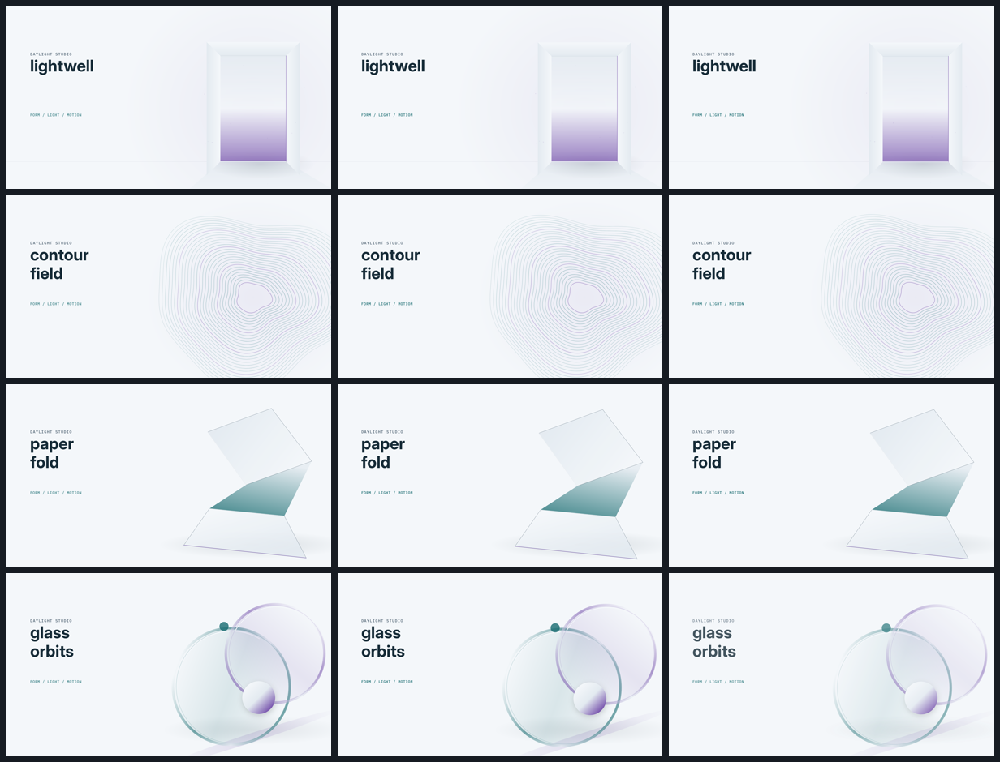
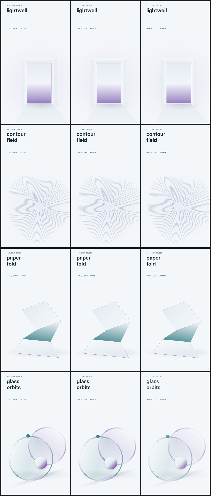
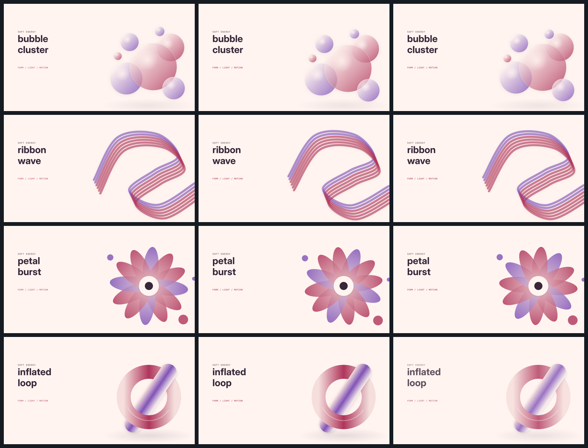
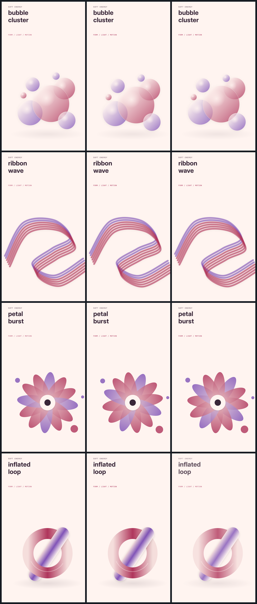
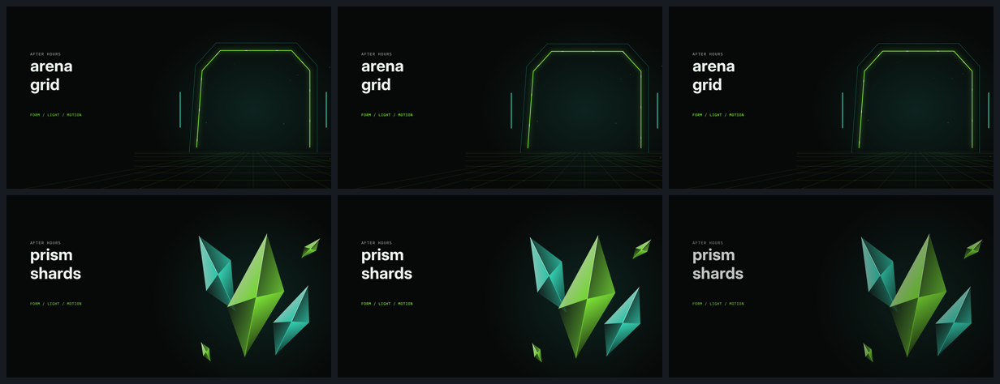
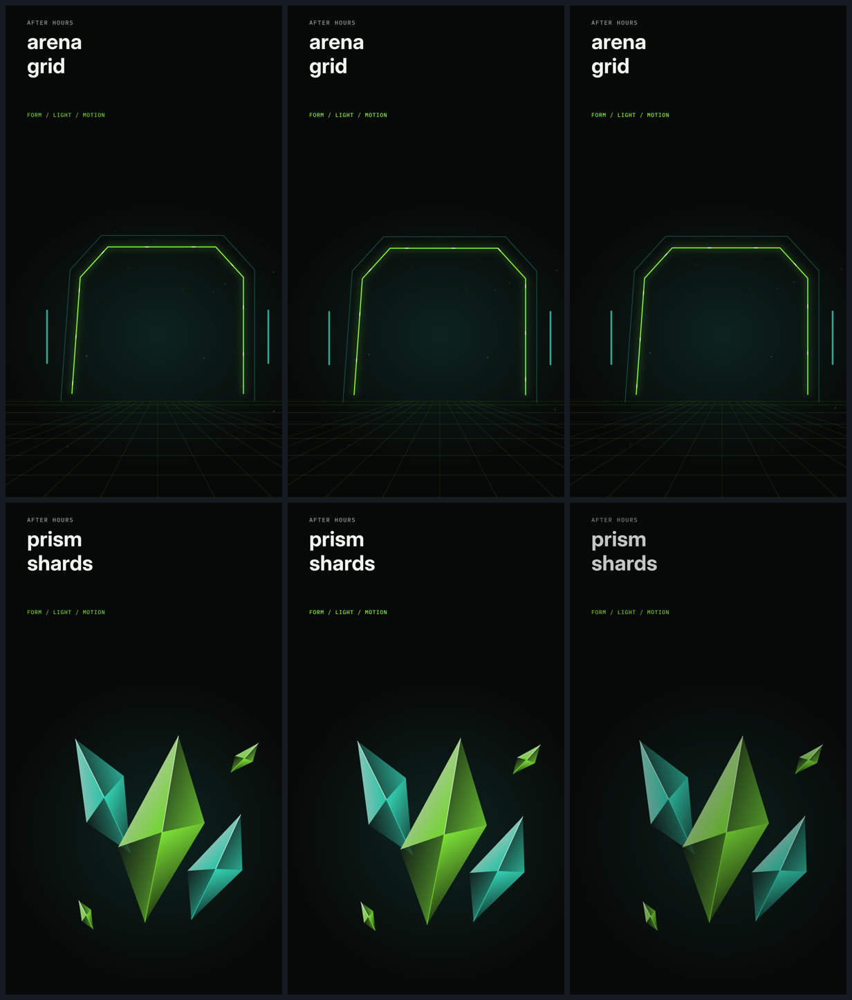
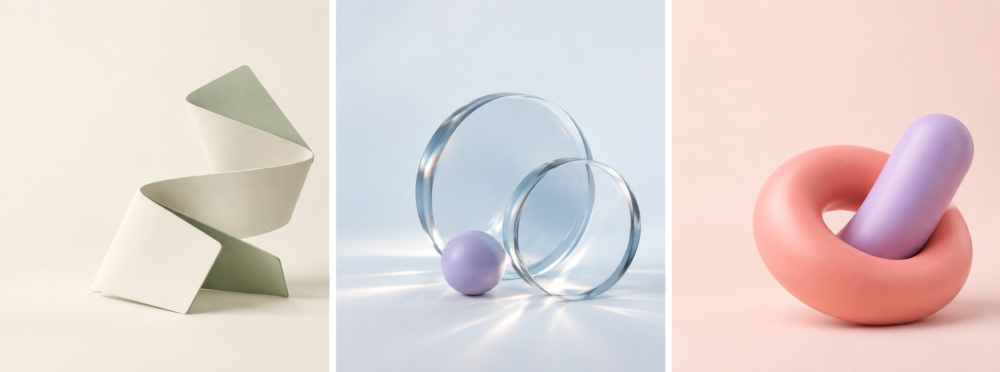
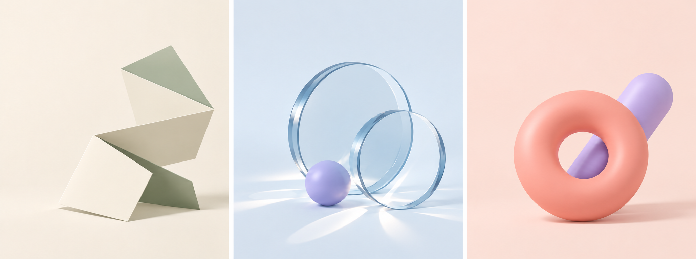

Form, light
and room to move.
Ten editable native compositions. Light professional materials lead the range, with soft playful forms and a darker angular counterpoint.
Two imagegen iterations explored the materials. Selected forms were reconstructed with native geometry, palette tokens and bundled typography. Rendering never calls imagegen.
Daylight studio
Pale architectural light, folded paper, optical discs and contour sculpture.
Silent material study · 1920 × 1080 · 30 fps · Editable storyboard
Landscape contact sheet

Portrait adaptations

Soft energy
Bubbles, flowing bands, a petal rosette and an inflated interlocking form.
Silent material study · 1920 × 1080 · 30 fps · Editable storyboard
Landscape contact sheet

Portrait adaptations

After hours
A luminous arena and faceted mineral shards.
Silent material study · 1920 × 1080 · 30 fps · Editable storyboard
Landscape contact sheet

Portrait adaptations

Two imagegen passes.
The first board explored material and light. The second simplified topology and made folds, rims and overlaps easier to reconstruct. The native results intentionally use a more graphic 2.5D treatment.


Exact prompts and tool provenance · Evaluation and reproduction notes
Use generated plates for evocative imagery when small visual differences are acceptable. Rebuild with native shapes when geometry, typography and palette assignment must stay controlled. Combine approved raster subjects with native copy when both matter.
87 contract tests passed; all 40 material/format combinations validated. Native drafts and decoded-frame QA found no one-frame pops. Deliberately slow loops still trigger held-frame advisories. These are library studies, not a new overall project score or a complete film review. Verification details.